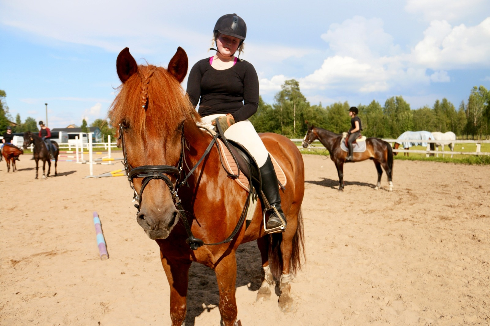

Ominaisuudet

Rotumääritelmän mukaan suomenhevonen on monipuolinen ja -käyttöinen, keskikokoinen
ja tukevarakenteinen hevonen. Ihanteellinen suomenhevonen on monipuolinen, helposti
käsiteltävä hevonen, jossa yhdistyvät voima, ketteryys, nopeus ja kestävyys.
Suomenhevonen on eloisa, luotettava ja valpas. Rotumääritelmän mukaan luonteessa on
tavoiteltavaa ”rehellisyys”: yhteistyöhalukkuus, tottelevaisuus ja into
työskennellä. Suomenhevonen on kestävä, terveydeltään hyvä ja yleensä
pitkäikäinen. Rotumääritelmän mukaan suomenhevosen pää on kuiva ja profiililtaan
suora, ei pitkä tai kupera; korvat ovat sopivan etäällä toisistaan ja lyhyet. Kaulan
tulisi olla hyvänmuotoinen, ei joutsenkaulamainen. Rungon tulisi olla
pitkänpuoleinen, mutta pyöreämuotoinen ja sopusuhtainen. Lanteen ei tulisi olla
tasainen tai hännän kiinnittyä liian ylös. Suomenhevoset ovat lihaksikkaita, ja
niillä on hyvä luusto, vankat kuivat jalat sekä vahvat kaviot.
Nykyisin yli 90 prosenttia suomenhevosista on rautiaita. Liinaharja, pään ja
jalkojen merkit ovat yleisiä. Perusvärien (rautias, ruunikko, musta) lisäksi
rodun geenipoolissa ovat myös kimo, voikkovärit, päistärikkö, rabicano ja
hopeavärit. Selkeä sabinokuvio (ei kuitenkaan SB1-tyypin) on melko yleinen, joskin
se esiintyy yleensä pienimerkkisenä 1900-luvun valikoivan värijalostuksen johdosta.
Rodun lähihistoriassa tunnetaan yksi valkoinen yksilö; se rekisteröitiin
rautiaankirjavaksi, ja sitä pidettiin ”sabinovalkoisena”. Yksittäisissä
geenitesteissä on varmistettu rodussa esiintyvän myös SW1-geeniä, joka tuottaa
splashed white -kuvion.
Työkäyttö
Nykypäivään on säilynyt vain muutamia työhevossuunnan sukulinjoja, ja vain noin kahdesta kolmeensataa yksilöä on varsinaisessa työkäytössä.[108] Kiinnostus perinteisiin työhevosmenetelmiin ja -töihin on kuitenkin kasvanut, ja työhevoskilpailuita järjestetään yhä säännöllisesti. Työhevoskilpailuihin kuuluu yleensä veto- tai kyntökilpailuita. Metsänhoitotöissä hevosmetsureille on yhä käyttöä esimerkiksi puistoissa, suojelualueilla ja muissa maastoltaan herkissä kohteissa, ja käytössä on Suomessa tavallisesti juuri suomenhevonen.Raviurheilu ja valjakkoajo
2000-luvulla noin 75 prosenttia suomenhevosista on ravikäytössä. Toiseksi yleisin käyttö on ratsuna.Suomenhevosia on käytetty kilpa-ajoon vuosisatojen ajan. Ensimmäiset varsinaiset ravikilpailut järjestettiin vuonna 1817. Sitä ennen kilvanajo kirkolta kotiin oli ollut perinteinen isäntien huvitus, ja raviurheilu säilyikin lähinnä maanviljelijöitten harrastuksena 1950-luvulle asti. Tuolloin Suomen hevosmäärä oli jo jyrkässä laskussa ja raviurheilu menetti suosiotaan. Vuodesta 1959 myös muiden hevosten on sallittu osallistua ravikilpailuihin Suomessa. Nopeampien lämminveriravurien maahantuonti ja totovedonlyönti loi lajiin uutta ammattimaista vaikutelmaa ja elvytti sen suosiota. Vedonlyöntitulojen kasvu kasvatti vuorostaan kilpailujen määrää, mikä auttoi suomenhevosta vakiinnuttamaan asemansa ravihevosena seuraavina vuosikymmeninä. Suomenhevoset ovat kilpailleet menestyksekkäästi myös valjakkoajossa. Suomenhevonen on Suomen käytetyin valjakkohevosrotu erityisesti alueellisella ja kansallisella tasolla. Heidi Sindan ajama tamma Jehun Viima kuului Suomen hopeaa saaneeseen yksivaljakkojoukkueeseen vuoden 2002 yksivaljakkoajon maailmanmestaruuksissa Ranskassa. Sindan mukaan rotu hyvätapaisena, keskittymiskykyisenä, työteliäänä, tottelevaisena ja kylmähermoisena soveltuu valjakkoajoon ihanteellisesti.